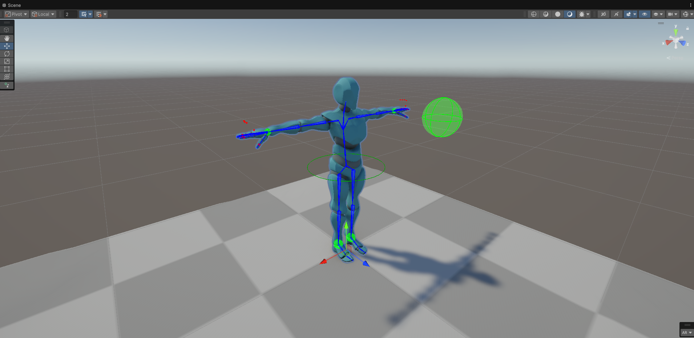

Setting up humanoid rigs in Unity can be a repetitive and time-consuming process. The Unity Auto Rig Builder is an editor tool designed to automate this workflow, helping you quickly generate basic IK-driven humanoid rigs using Unity's Animation Rigging package.
What is Auto Rig Builder?
🚀 Unity Auto Rig Builder is an editor utility that creates the necessary hierarchy, controls, and constraints (IK) for humanoid characters. It’s perfect for prototyping, gameplay rigs, and procedural animation setups.
- 🦴 Automated Hierarchy - Creates a clean "Rig" structure under your character.
- 🎯 IK Generation - Automatically sets up Two-Bone IK for arms and legs.
- 🧠 Head Control - Generates rotation constraints for the head.
- 🛠️ User-Friendly Editor - A simple window to map bones and build the rig in seconds.
Installation
You can install this package directly via the Unity Package Manager (UPM) using the GitHub URL.
https://github.com/DhineshMoorthy-gamedev/Unity_AutoRigBuilder.git
- Open Unity → Window → Package Manager.
- Click + → Add package from git URL.
- Paste the URL above and click Add.
Usage Guide
- Navigate to Tools → Auto Rig Builder.
- Assign the Animator component of your character.
- Click Build Rig.
The Result
Once built, you'll see a new "Rig" GameObject containing all targets and constraints. You can immediately start manipulating the limb controls in the Scene view.
Technical Breakdown
The tool leverages Unity's Animation Rigging package. Specifically, it creates
TwoBoneIKConstraint components for limbs and MultiRotationConstraint for
the head, ensuring natural-looking movement for humanoid rigs.
// Sample Constraint Structure Generated: // Rig // ├── Head_Control // ├── LeftArm_IK // ├── RightArm_IK // ├── LeftLeg_IK // └── RightLeg_IK
Conclusion
Unity Auto Rig Builder removes the friction of manual rigging for rapid prototyping. If you're looking to speed up your character animation pipeline, give it a try!
Support the Project: If you find this tool useful, consider giving it a ⭐ on GitHub!